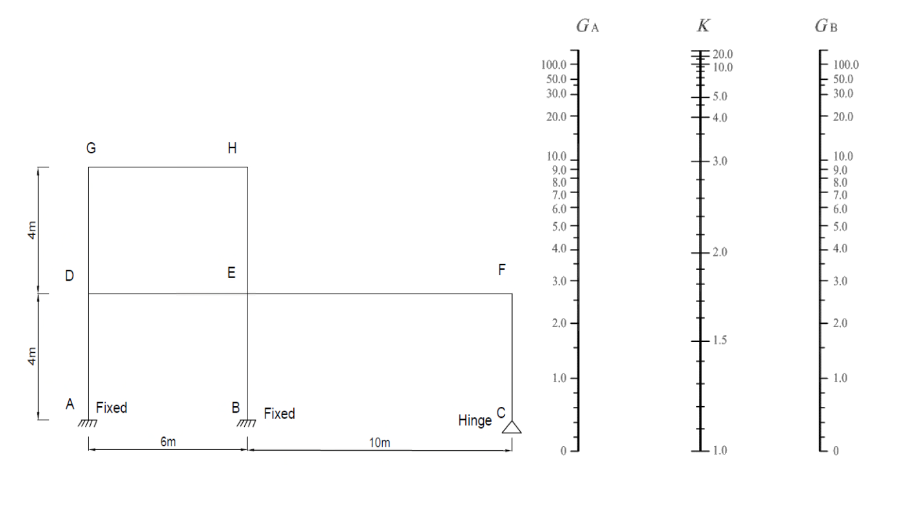
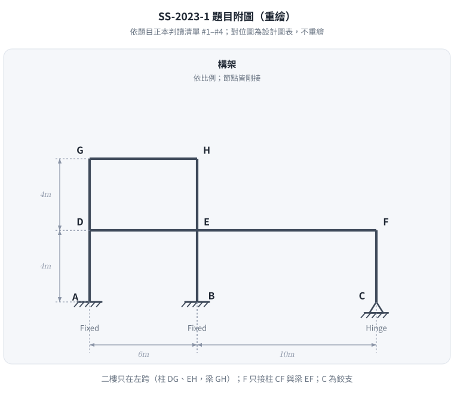

📄 題目正本：考卷原文・附圖・判讀清單（已確認）
SS-2023-1 題目正本
本檔只記錄考卷上寫了什麼、圖上畫了什麼，不含任何解法。解析見同資料夾
SS-2023-1.md。
判讀清單經使用者確認前，狀態為「待確認」；確認後本檔原則上不再修改（改動須回考卷原圖並記 log）。
| 項目 | 內容 |
|---|---|
| 考卷 | raw/exams/SS-2023_鋼結構設計.pdf 第 1 頁（頁次 2－1），第一題 |
| 考年 | 民國 112 年（2023） |
| 配分 | 25 分 |
| 附圖 | 1 張（構架圖＋$G_A$–$K$–$G_B$ 對位圖），SS-2023-1-fig-1.png |
| 判讀狀態 | 已確認（2026-11-02 使用者確認，含「不確定」項之解讀；轉錄同日，PyMuPDF 110 dpi 全頁＋構架 300 dpi 局部目視，盲讀後才比對既有解析） |
1. 考卷原文（逐字）
一、計算精確的有效長度係數，在鋼結構設計中相當重要。請用查圖的方法，試求下圖結構各柱子之有效長度係數（K）。鉸接（hinge）時，G 可用 10，固接（fixed）時，G 可用 1。（25 分）
柱與梁之 I 值表（單位：cm⁴）
柱 AD、BE and CF 柱 DG and EH 梁 EF 梁 DE and GH I 值 16000 3000 17000 35000
2. 考卷給的公式、附表與參數
- I 值表（照錄於 §1）。
- 支承的 $G$：鉸接 10、固接 1（題文）。
- 對位圖一張（$G_A$、$K$、$G_B$ 三軸；$K$ 軸刻度由 1.0 到 20.0，即側移構架版本），沒有印對位圖公式。
- 卷首注意事項：㈠可用計算器、㈡不必抄題、㈢除專門名詞或數理公式外應使用本國文字作答。
3. 附圖

圖面文字照錄：G；H；D；E；F；A；B；C；Fixed；Fixed；Hinge；4m；4m；6m；10m；$G_A$；$K$；$G_B$；對位圖刻度（$G$ 軸 0～100.0，$K$ 軸 1.0～20.0）。
4. 判讀清單
「把握」標不確定者請優先確認；解讀類項目（題目用字的意思）另標「解讀」。
| # | 項目 | 判讀 | 圖上／題文依據 | 把握 |
|---|---|---|---|---|
| 1 | 支承 | A、B 固接（斜線地面符號＋「Fixed」）；C 鉸支（三角形＋「Hinge」） | 構架圖（300 dpi） | 確定 |
| 2 | 構件與長度 | 柱 AD、BE、CF 各 4 m；柱 DG、EH 各 4 m；梁 DE 6 m、EF 10 m、GH 6 m | 構架圖尺寸線 | 確定 |
| 3 | 節點 | D、E、F、G、H 皆為剛接（圖上無鉸接符號） | 構架圖 | 確定 |
| 4 | 二樓範圍 | 只有左跨（D–G、E–H、G–H）；F 只接柱 CF 與梁 EF | 構架圖 | 確定 |
| 5 | 側移／無側移 | 側移構架：題文未說，但所附對位圖 $K$ 軸自 1.0 起（側移版） | 對位圖刻度 | 確定（解讀） |
| 6 | 所求 | 五根柱 AD、BE、CF、DG、EH 各自的 $K$（查圖） | 題文「各柱子」 | 確定 |
| 7 | 梁遠端修正 | 查圖前梁勁度是否依遠端條件修正（例如遠端 F 只接一柱） | 題文未提 | 不確定 → 使用者確認：不修正，直接用 $I/L$（同本解） |
轉錄：2026-11-02（SS-U1-1 題目正本推廣・批 3）｜確認：2026-11-02 使用者確認
考題編號：SS-2023-1
主分類： SS-U1-1 拉力及壓力桿件
副分類： 無
設計法： 概念題（含計算）
標籤： 有效長度 K係數 對位圖 查圖法 nomograph 側移構架 G值 不規則框架 固接 鉸接 對位圖方程式
1. 題目（考卷原文見題目正本）
考卷原文、公式／附表、附圖與判讀清單（已確認）見
SS-2023-1-problem.md。本節只列解題時最容易讀錯的地方與本解使用的記號；題意以題目正本為準。

圖 1 題目附圖重繪（依題目正本判讀清單 #1–#4；對位圖為設計圖表，不重繪）。C 畫成鉸支、二樓只在左跨，攔下把 C 當固接或把二樓延伸到右跨而算錯 $G$ 的誤讀。
常見誤讀
| 項目 | 正確判讀 | 常見誤讀 |
|---|---|---|
| 支承 | A、B 固接 $G = 1$；C 鉸支 $G = 10$ | C 當成固接 |
| 構架範圍 | 二樓只在左跨（DG、EH、GH）；F 只接柱 CF 與梁 EF | 以為右跨也有二樓 |
| 側移 | 所附對位圖為側移版（$K$ 軸自 1.0 起） | 改用無側移圖 |
| 梁勁度 | 直接用 $I/L$，不做遠端修正（使用者確認） | 對梁自行乘修正係數 |
本解記號： 柱 AD、BE、CF $I = 16{,}000$；柱 DG、EH $3{,}000$；梁 EF $17{,}000$；梁 DE、GH $35{,}000$ cm⁴；層高 400 cm；跨度 DE、GH 600 cm、EF 1000 cm。
2. 考題核心精神與出題者意圖 (Core Concepts & Examiner's Intent)
核心觀念：有效長度係數 K 反映柱端束制條件——束制愈強，K 愈小，柱挫屈強度愈大
對位圖（Alignment Chart / Nomograph）的原理：
$$G = \frac{\sum (I_c/L_c)}{\sum (I_b/L_b)}$$
- $G$ 大 → 柱剛度相對梁大 → 梁束制弱 → K 大（挫屈模態接近自由）
- $G$ 小 → 梁剛度相對柱大 → 梁束制強 → K 小（挫屈模態接近固接）
- 固接（Fixed）：$G = 1$（規範簡化值，代表梁剛度遠大於柱）
- 鉸接（Hinge）：$G = 10$（規範簡化值，代表幾乎無束制）
出題者測驗重點：
1. 能正確計算各節點 G 值（分清哪些柱、哪些梁連接到此節點）
2. 能識別本題為側移構架（Sway Frame），需用右側圖（K > 1）
3. 能處理不規則框架（柱長度相同但 I 值不同、部分柱在中途終止）
3. 解題戰略地圖與陷阱分析 (Strategic Roadmap & Trap Analysis)
作戰計畫（每根柱需算兩端 G，共查一次圖）：
1. 明確各柱長度（均為 4m = 400 cm）與 I 值
2. 計算各節點 G 值（分清各節點連接哪些柱、哪些梁）
3. 對每根柱，以兩端 G 值查對位圖讀取 K
4. 列表彙整
關鍵陷阱：
⚠️ 陷阱1：本題為側移構架（Sway Frame），K > 1
框架底部雖有固接（A、B）和鉸接（C），但整體為無橫向支撐（Unbraced）的側移構架。應使用側移框架（右側）對位圖，不可用無側移（左側）圖。⚠️ 陷阱2：節點 G 的柱要包含「上下兩段」
在 D、E 這類中間節點，G 的分子需同時包含下方柱（AD 或 BE）和上方柱（DG 或 EH）的 $I/L$。⚠️ 陷阱3：F 節點只有一根梁（EF），沒有梁從 F 往右延伸
CF 頂端 F 只與梁 EF 相連，且 F 點上方無柱（第二層右側無柱），計算 $G_F$ 時分母只有 $I_{EF}/L_{EF}$。⚠️ 陷阱4：GH 的跨距等於 DE，不是 EF
梁 GH 位於第二層左側（G 到 H），跨距 = A 到 B 的距離 = 6m = 600 cm，與梁 DE 相同，不是 10m。
3.5 變數層次分析（Variable Hierarchy Analysis）
複習提示：解題後，在每個卡住的知識點「卡關?」欄標記
⚠；第二次複習時只看有⚠的項目。
最終目標： 計算框架各柱端剛度比 G，查側移構架對位圖讀取有效長度係數 K
主要公式（$\boxed{\phantom{x}}$ = 未知，待推導）
$$\boxed{G} = \frac{\sum (I_c/L_c)}{\sum (I_g/L_g)}, \quad \text{查對位圖} \Rightarrow \boxed{K}$$
特殊邊界：固接底 → G = 1；鉸接底 → G = 10；自由頂（無梁）→ G → ∞
L1：題目直接給定
| 構件 | I 值 (cm⁴) | 長度 |
|---|---|---|
| 柱 AD, BE, CF | 16000 | 4 m = 400 cm |
| 柱 DG, EH | 3000 | 4 m = 400 cm |
| 梁 EF | 17000 | 10 m = 1000 cm |
| 梁 DE, GH | 35000 | 6 m = 600 cm |
| 底端 A, B | 固接 → G = 1 | |
| 底端 C | 鉸接 → G = 10 |
L2：需知識點推導
Step 1：計算各柱、梁 I/L
| 構件 | I/L (cm³) | 卡關? |
|---|---|---|
| 柱 AD = BE = CF | 16000/400 = 40 | |
| 柱 DG = EH | 3000/400 = 7.5 | |
| 梁 EF | 17000/1000 = 17 | |
| 梁 DE = GH | 35000/600 = 58.33 |
Step 2：計算各節點 G 值
| 節點 | G 計算式 | G 值 | 卡關? |
|---|---|---|---|
| A | 固接 → G = 1 | 1 | |
| B | 固接 → G = 1 | 1 | |
| C | 鉸接 → G = 10 | 10 | |
| D | $(40+7.5)/58.33 = 47.5/58.33$ | 0.81 | |
| E | $(40+7.5)/(17+58.33) = 47.5/75.33$ | 0.63 ⚠ 常見卡關（分母含兩梁） | |
| F | $40/(17) = 40/17$ | 2.35（F 上方無柱、分子只含 CF）⚠ | |
| G | $7.5/58.33$ | 0.13 | |
| H | $7.5/58.33$（H 只接梁 GH；梁 EF 在下一層，不屬於 H） | 0.13 ⚠ 常見卡關 |
Step 3：查對位圖讀取 K
| 柱 | 底端 G | 頂端 G | K（側移構架） | 卡關? |
|---|---|---|---|---|
| AD | 1 | 0.81 | 1.29 | |
| BE | 1 | 0.63 | 1.26 | |
| CF | 10 | 2.35 | 2.17 | ⚠ |
| DG | 0.81 | 0.13 | 1.15 | |
| EH | 0.63 | 0.13 | 1.12 |
L3：深層知識（不懂就卡住）
| 知識點 | 說明 | 卡關? |
|---|---|---|
| 側移構架（Sway Frame）用右側圖，K > 1 | 無橫向支撐的框架必用側移對位圖（K > 1.0） | |
| 中間節點 G 的柱要包含上下兩段 | 節點 D/E/G/H 的分子包含該節點上下所有連接柱的 I/L | |
| 固接 G = 1（非 0）；鉸接 G = 10（非 ∞） | 規範規定的設計值，非力學理論值（理論值為 0 和 ∞） | |
| F 點上方無柱，計算 G_F 時分子只含 CF | F 為頂端懸臂節點，無上方柱貢獻 |
4. 步驟化詳細計算過程 (Step-by-Step Detailed Calculation)
一、構件幾何確認
柱（均為 4m = 400 cm 高）：
| 柱 | I（cm⁴） | L（cm） | I/L |
|---|---|---|---|
| AD | 16000 | 400 | 40.0 |
| BE | 16000 | 400 | 40.0 |
| CF | 16000 | 400 | 40.0 |
| DG | 3000 | 400 | 7.5 |
| EH | 3000 | 400 | 7.5 |
梁：
| 梁 | I（cm⁴） | L（cm） | I/L |
|---|---|---|---|
| DE | 35000 | 600 | 58.33 |
| EF | 17000 | 1000 | 17.00 |
| GH | 35000 | 600 | 58.33 |
二、各節點 G 值計算
節點 A（柱 AD 底端）：固接 → $G_A = 1.0$
節點 B（柱 BE 底端）：固接 → $G_B = 1.0$
節點 C（柱 CF 底端）：鉸接 → $G_C = 10$
節點 D（柱 AD 頂 = 柱 DG 底，連梁 DE 左端）
$$G_D = \frac{(I_{AD}/L_{AD}) + (I_{DG}/L_{DG})}{I_{DE}/L_{DE}} = \frac{40.0 + 7.5}{58.33} = \frac{47.5}{58.33} = \boxed{0.81}$$
節點 E（柱 BE 頂 = 柱 EH 底，連梁 DE 右端和梁 EF 左端）
$$G_E = \frac{(I_{BE}/L_{BE}) + (I_{EH}/L_{EH})}{(I_{DE}/L_{DE}) + (I_{EF}/L_{EF})} = \frac{40.0 + 7.5}{58.33 + 17.00} = \frac{47.5}{75.33} = \boxed{0.63}$$
節點 F（柱 CF 頂，連梁 EF 右端；F 上方無柱）
$$G_F = \frac{I_{CF}/L_{CF}}{I_{EF}/L_{EF}} = \frac{40.0}{17.00} = \boxed{2.35}$$
（分子只有 CF 一根柱，因 F 點上方無柱；分母只有梁 EF，F 點右側無梁）
節點 G（柱 DG 頂，連梁 GH 左端；G 上方無柱）
$$G_G = \frac{I_{DG}/L_{DG}}{I_{GH}/L_{GH}} = \frac{7.5}{58.33} = \boxed{0.13}$$
節點 H（柱 EH 頂，連梁 GH 右端；H 上方無柱）
$$G_H = \frac{I_{EH}/L_{EH}}{I_{GH}/L_{GH}} = \frac{7.5}{58.33} = \boxed{0.13}$$
三、查對位圖（側移構架）讀取 K 值
依各柱兩端 G 值，在側移構架（Sway Frame）對位圖上，用直線連接 $G_A$（上端）和 $G_B$（下端），讀取直線與 K 軸的交點：
| 柱 | $G_{\text{下端}}$（底） | $G_{\text{上端}}$（頂） | 查圖讀得 K |
|---|---|---|---|
| AD | 1.0（固接） | 0.81（節點D） | 1.29 |
| BE | 1.0（固接） | 0.63（節點E） | 1.26 |
| CF | 10（鉸接） | 2.35（節點F） | 2.17 |
| DG | 0.81（節點D） | 0.13（節點G） | 1.15 |
| EH | 0.63（節點E） | 0.13（節點H） | 1.12 |
📌 查圖說明：
對位圖中，$G$ 軸從下（0）到上（∞），K 軸在中間。考場查圖；上表 K 以對位圖本身的方程式 $\dfrac{G_AG_B(\pi/K)^2-36}{6(G_A+G_B)} = \dfrac{\pi/K}{\tan(\pi/K)}$ 精確求解，查圖讀值落在 ±0.05 內即可。查圖自我檢查： CF 柱兩端 $G = 10$ 與 2.35，若讀成 2.5，代表頂端 $G_F$ 要大到約 4.5，與 2.35 不符；AD、BE 底端固接 $G = 1$、頂端 0.6～0.8，K 應在 1.25～1.30，讀成 1.2 以下偏小（不保守）。
四、結果彙整
$$\boxed{K_{AD} = 1.29, \quad K_{BE} = 1.26, \quad K_{CF} = 2.17, \quad K_{DG} = 1.15, \quad K_{EH} = 1.12}$$
| 柱 | K | L (m) | KL (m) |
|---|---|---|---|
| AD | 1.29 | 4 | 5.16 |
| BE | 1.26 | 4 | 5.04 |
| CF | 2.17 | 4 | 8.68 |
| DG | 1.15 | 4 | 4.61 |
| EH | 1.12 | 4 | 4.49 |
5. 關鍵爭議點與進階探討 (Critical Issues & Advanced Discussion)
G 值的物理意義
$$G = \frac{\text{節點上所有柱的 } I/L \text{ 之和}}{\text{節點上所有梁的 } I/L \text{ 之和}}$$
- 分子（柱剛度和）：代表柱想抵抗轉動的能力
- 分母（梁剛度和）：代表梁束制柱端旋轉的能力
- G = 0：梁束制力無限大（完全固接極限）
- G = ∞：梁無束制力（完全鉸接極限）
規範取固接 $G=1$（而非 0），是因實際固接底板（base plate）仍有微小轉動；鉸接取 $G=10$（而非 ∞）是因實際鉸接仍有些微摩擦束制。
CF 柱 K ≈ 2.2 的工程解讀
CF 柱底為鉸接（$G=10$），頂端束制也相對弱（$G_F=2.35$，因梁 EF 的 $I/L$ 較小），導致 K 值高達 2.17。實務上這表示：
$$KL = 2.17 \times 4\text{ m} = 8.7\text{ m}$$
等效挫屈長度約 8.7 m，但物理長度只有 4m。設計時必須使用較大的截面，或在 F 點增設水平束制（如與右側牆面連接）來降低 K 值。
對位圖的適用限制
AISC 對位圖基於以下假設：
1. 所有梁柱連接為剛接
2. 所有柱同時達到挫屈
3. 梁的兩端轉角相等（遠端為固接時須修正）
本題的框架幾何不規則（右側只有一層），理論上對位圖的精確度稍有降低，但考場上查圖結果已是最佳近似解。
6. 依最新規範（AISC 360-16／-22）對照
| 項目 | 考卷（有效長度法） | AISC 360-16／-22 |
|---|---|---|
| 對位圖 | 查圖求 K | 附錄 7 有效長度法；解說 C-A-7 附相同對位圖與方程式 |
| 支承 G 值 | 鉸 10、固 1 | 解說相同建議 |
| 主流方法 | — | 第 C 章直接分析法：構材取 $K = 1$，以二階分析＋剛度折減處理穩定 |
修正日期：2026-11-01（G 值無誤，惟 L2 表 $G_H$ 誤算為 0.10（誤將梁 EF 計入），更正為 0.13；原解對位圖讀值偏差，以對位圖方程式精確解更正：AD 1.20 → 1.29、BE 1.17 → 1.26、CF 2.50 → 2.17、DG 1.12 → 1.15、EH 1.10 → 1.12；新增查圖自我檢查、KL 彙整與 §6 對照）
驗證狀態：unverified
修正日期：2026-11-02（§1 全文重述改為指向題目正本 SS-2023-1-problem.md（已確認）＋常見誤讀＋本解記號；解題內容與答案不變）
修正日期：2026-11-03（§1 補入題目附圖重繪 figs/SS-2023-1-fig-1-problem.svg（依已確認的題目正本判讀清單，腳本 gen_SS-2023-1.py，可重跑）；解題內容與答案不變）